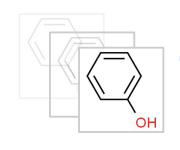
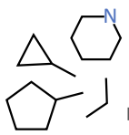
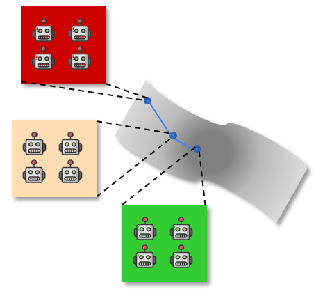
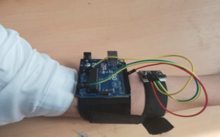
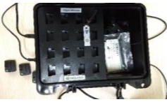
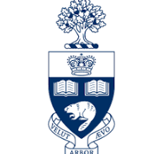
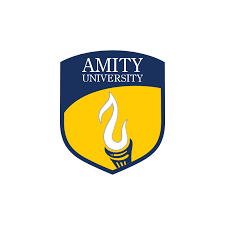

Hi! I am a senior research engineer at Valence Labs (Mila) with Dominique Beaini and Emmanuel Bengio. Previously I was a research engineer at Google X with Rishabh Singh and Lam Nguyen, and a student researcher at Borealis AI. I completed my M.A.Sc in ECE at the University of Toronto with Yuri Lawryshyn and Kostas Plataniotis. I earned my B.Tech in ECE from Amity University with Rinki Gupta.
How Molecules Impact Cells: Unlocking Contrastive PhenoMolecular Retrieval
P Fradkin1, P Azadi1, K Suri, . . ., D Beaini NeurIPS 2024
FM4S @ NeurIPS 2024 (oral) (Best Paper Award) [paper][reviews]
On the Scalability of GNNs for Molecular Graphs
M Sypetkowski, F Wenkel, . . ., K Suri, P Fradkin, D Beaini NeurIPS 2024 [paper][code][blog] [reviews]
Surprise Minimizing Multi-Agent Learning with Energy-based Models K Suri, X Q Shi, K Plataniotis, Y Lawryshyn NeurIPS 2022 [paper][webpage][code][talk][reviews]
Continuous Sign Language Recognition from Wearable IMUs using CapsNet and Game Theory K Suri, R Gupta CEE, Elsevier, Vol. 78, 2019. [paper][code][demo][reviews]
Transfer Learning for sEMG-based Hand Gesture Classification using Master-Slave Nets K Suri, R Gupta IEEE IC3I 2018. [paper]
Theses
Deep Hierarchical Reinforcement Learning MASc thesis, 2021 University of Toronto [link]
Application of Deep Learning and Game Theory for Sign Language Recognition using Wearable Sensors BTech thesis, 2019 Amity University [link]
 Hi! I am a senior research engineer at Valence Labs (Mila) with Dominique Beaini and Emmanuel Bengio. Previously I was a research engineer at Google X with Rishabh Singh and Lam Nguyen, and a student researcher at Borealis AI. I completed my M.A.Sc in ECE at the University of Toronto with Yuri Lawryshyn and Kostas Plataniotis. I earned my B.Tech in ECE from Amity University with Rinki Gupta.
Hi! I am a senior research engineer at Valence Labs (Mila) with Dominique Beaini and Emmanuel Bengio. Previously I was a research engineer at Google X with Rishabh Singh and Lam Nguyen, and a student researcher at Borealis AI. I completed my M.A.Sc in ECE at the University of Toronto with Yuri Lawryshyn and Kostas Plataniotis. I earned my B.Tech in ECE from Amity University with Rinki Gupta.